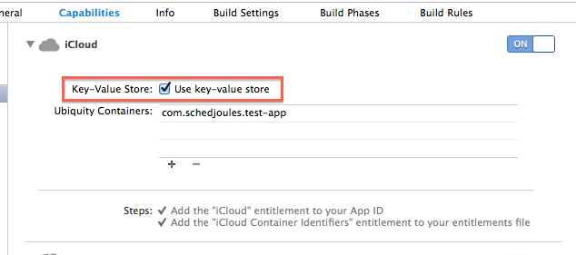
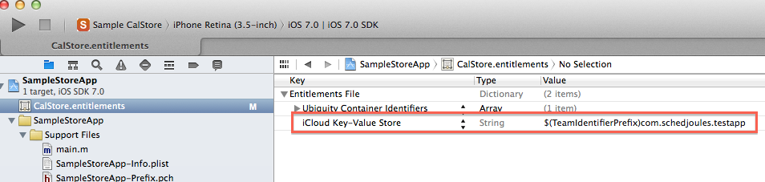

MultipleApps Document
Multiple Apps
Overview
Some vendors use multiple versions for the same “app”. For example, they have a different iPhone and iPad version or a free and a premium version. Due to the nature of the Apple Ecosystem, each app has its own In-App purchases: in-app purchases can’t be shared between apps. This introduces a difficulty for those apps.
Problem
Users expect to be able to use their in-app purchased calendar on the iPhone version also on the iPad version of the same app. However, technically those are two different in-app purchases. The user thus has to purchase both in-app purchases and is essentially paying for the same content twice.
Solution
To mitigate this issue, the CalendarStore framework includes functionality to share in-app purchases between different versions of the same app. This guide will explain how to set this up.
Linking AuthorizationTokens
Each app-version has its own in-app purchases and its own AuthorizationToken. Those tokens need to be linked together at SchedJoules. To do this, please contact support@schedjoules.com with the Names, BundleIds and AuthorizationTokens of the app-versions you wish to link together.
Enable iCloud for both apps
The CalendarStore framework uses iCloud to sync purchasing statuses of in-app purchases to different app-versions. In order to be able to do this, you will need to enable iCloud for all your app-versions in XCode:
- Select your app’s Target in Xcode
- Go to the Capabilities tab
- Set iCloud to ON
- Checkmark Use key-value store
- Open the .entitlements file for your app (usually AppName.entitlement) in Xcode
- Make sure that both apps have the same value for the iCloud Key-Value Store (
com.apple.developer.ubiquity-kvstore-identifier) item
iCloud Key-Value Store identifier
For step 6, you usually pick one of the two bundle-identifiers of both apps and fill that in after $(TeamIdentifierPrefix).
For example, we have two apps with bundle identifiers com.schedjoules.testapp and com.schedjoules.ipadstore. In both apps, we will use $(TeamIdentifierPrefix)com.schedjoules.testapp as the iCloud Key-Value Store identifier. This ensures both apps share the same iCloud data.
Screenshots
Step 1 to 4:

Step 5 and 6:

Enable iCloud sync for the CalendarStore
To enable iCloud sync, you can set the CalendarStoreiCloudSyncEnabled key in your app’s Info.plist to YES. You can also do this in code:
- (BOOL)application:(UIApplication *)application didFinishLaunchingWithOptions:(NSDictionary *)launchOptions
{
[CalStoreStoreKitController sharedController].iCloudSyncEnabled = YES;
}
Internals
The CalendarStore uses the NSUbiquitousKeyValueStore iCloud functionality to share purchasing tokens between related apps. If the user does not have iCloud or iCloud > Documents & Settings enabled, this functionality won’t work.
Test
Before deploying to your users, make sure you test the iCloud Sync. You can force a resync of purchased in-app purchases over iCloud by using the ‘Restore Purchases’ functionality in both apps.